Note: I have previously setup my website in IIS and added a record in my hosts file to map to my website name.
127.0.0.1 RecordDB.com.au
Go to IIS website and download the URLRewrite executable. Install it on your machine and now go to your IIS console and select your website (in my case it will be recorddb.com.au).
You should see this in your website settings.
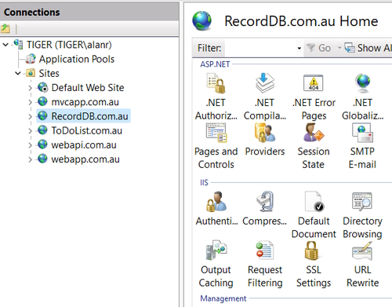
Go to the Root of your IIS server and click on Server certificate.
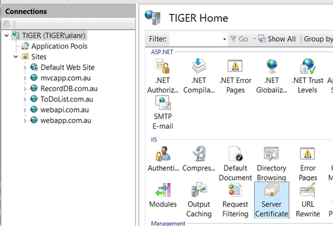
This opens the following dialog.
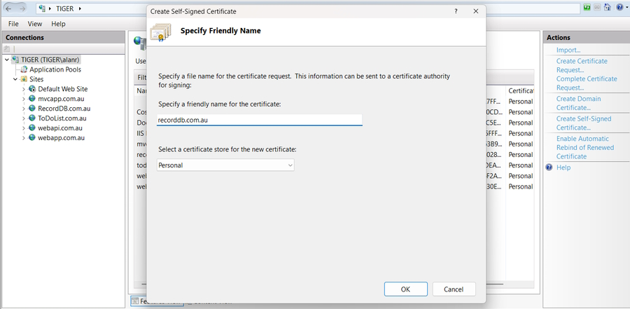
Add a friendly name, recorddb.com.au and make sure personal is selected. You will then see a list of all your personal certificates.
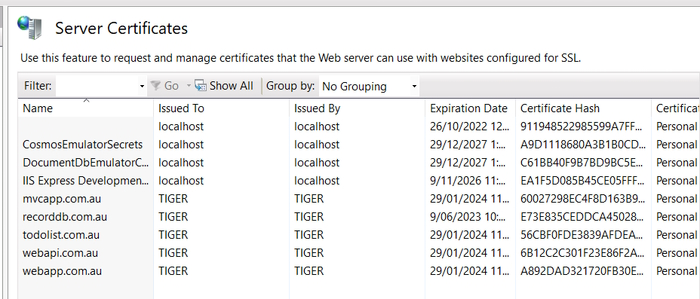
On your website in IIS right-click and select Edit Bindings to add a new SSL binding.
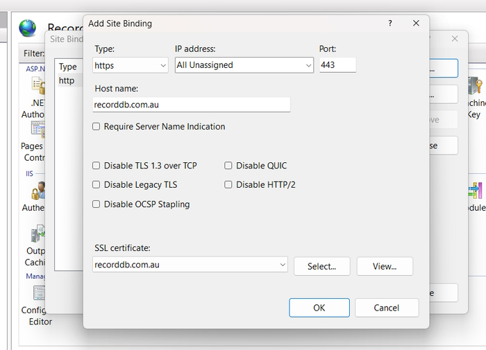
Remove the port 80 binding.
You can now use https to serve your website by clicking on the Browse Website option. Make sure to select the https link.
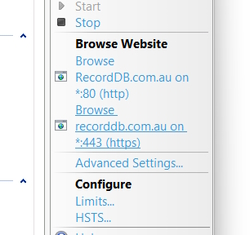
You will get a browser error of Potential Security Risk Ahead. Continue on and ignore this.
Your browser displays an error page because the self-signed certificate was issued by your computer, not by a trusted Certificate Authority (CA). Browsers will trust the certificate if you add it to the list of Trusted Root Certification Authorities in the certificates store it on the local computer, or in Group Policy for the domain.
You can see your certificate in Certificate Manager.
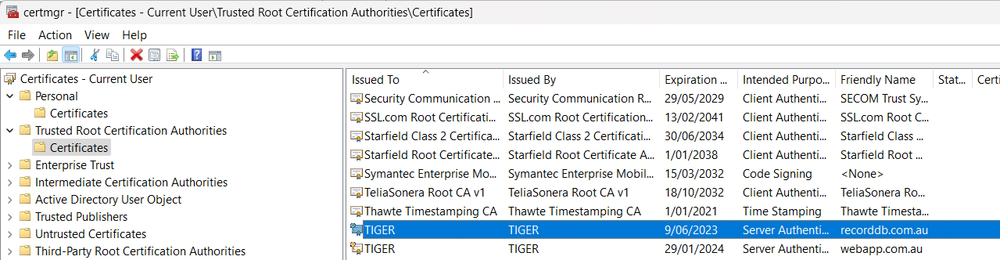
Note: In Firefox you see you link as.
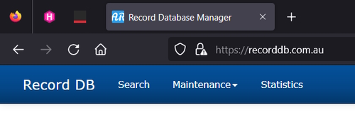
If you click on the certificate it tells you that the connection isn't secure. Chrome, Brave and Edge will have a line through https to let you visually know that the site isn't secure.
Normally we would finish here but I am going to add a URL Rewrite rule to our website.
Click on URL Rewrite in your website. Add a new blank rule named Http Redirect.
The setting are.
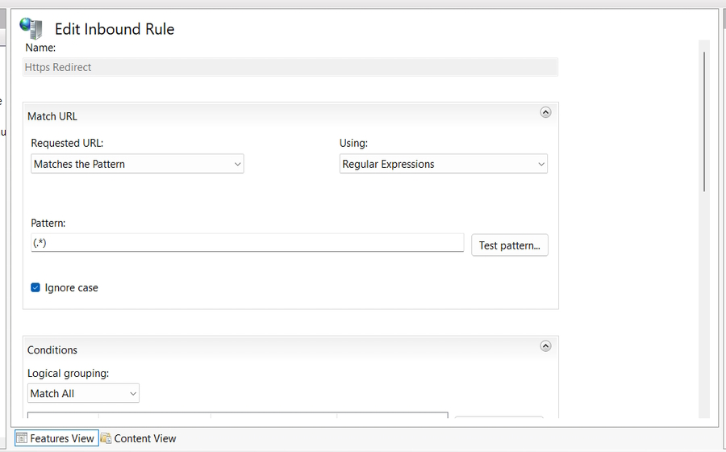
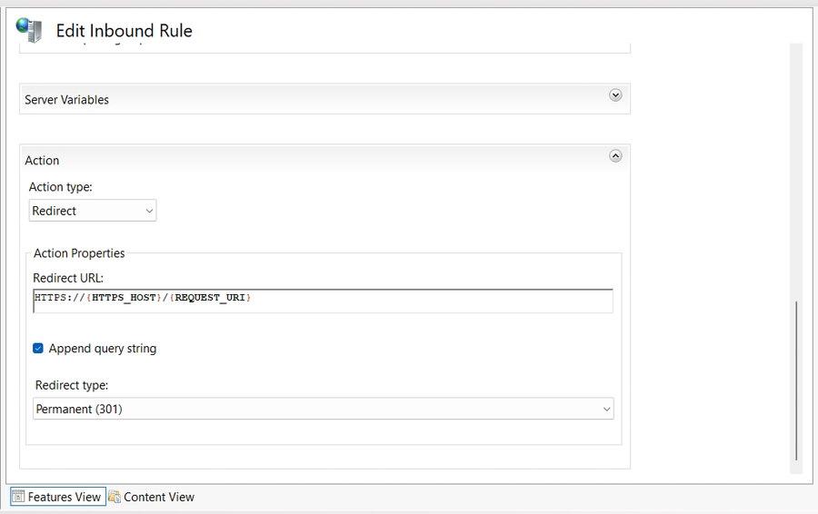
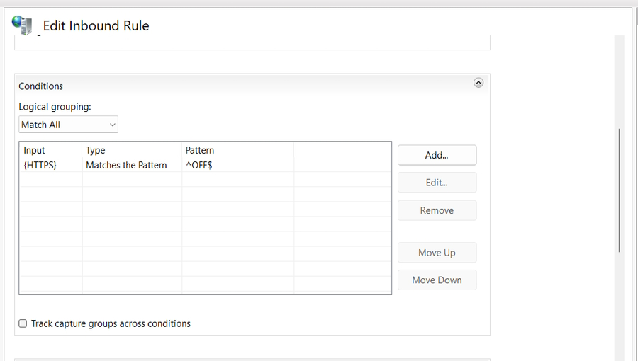
Now if a user uses the URL, http://recordb.com.au it will be redirected to https://recordb.com.au
The method I used above worked fine for the first time I created a certificate but failed when I went to renew the certificate.
I ended up creating the new certificate using Powershell Admin.
New-SelfSignedCertificate -DnsName "recorddb.com.au" -CertStoreLocation "cert:\LocalMachine\My"
This produced the following output
FB8A486DE7A5769CDADA6BBCE38C1528E2A75A54 CN=recorddb.com.au {Client Authentication, Server Authentication}
Where the first value was the thumbprint, (FB8A486DE7A5769CDADA6BBCE38C1528E2A75A54).
Add the thubprint to the following code.
$thumbprint = "FB8A486DE7A5769CDADA6BBCE38C1528E2A75A54"
Export-Certificate -Cert "cert:\LocalMachine\My\$thumbprint" -FilePath "C:\Cert\recorddb.cer"
This worked fine but the next step failed.
Import-Certificate -FilePath "C:\Cert\recorddb.cer" -CertStoreLocation "cert:\LocalMachine\Root"
This step didn't add the certificate to Trusted Root.
To get around this I had to double-click on the certificate in C:\Cert and click on the Install Certificate button.
I then used local user and the select the option to place all certificates in the following store. This allowed me to save the certificate in the Trusted Root Certificate Authorities.
This worked!
I then opened the website using https and it had a secure certificate.
Note: Use certlm.msc to view your keys.
It is a bit frustrating that I can't create the self-signed certificate in Internet Information Server. When I did this I could see the certificate in the Trusted Root certificate area but it wasn't working.
In future I will use Powershell to create new certificates and manually install the certificate.
I asked Deepseek why it didn't install the certificate in the Trusted Root Authority and it said to manually install it instead. It also came up with a more complex script to install the certificate.
# Create certificate with extended properties
$cert = New-SelfSignedCertificate `
-DnsName "recorddb.com.au" `
-CertStoreLocation "cert:\LocalMachine\My" `
-FriendlyName "recorddb.com.au Local Dev" `
-KeySpec Signature `
-KeyUsage DigitalSignature `
-KeyUsageProperty Sign `
-KeyAlgorithm RSA `
-HashAlgorithm SHA256
# Export to file
$certPath = "cert:\LocalMachine\My\$($cert.Thumbprint)"
Export-Certificate -Cert $certPath -FilePath "C:\Cert\recorddb.cer" -Type CERT
# Import to Trusted Root
$import = Import-Certificate -FilePath "C:\Cert\recorddb.cer" -CertStoreLocation "cert:\LocalMachine\Root"
# Verify installation
Get-ChildItem -Path "cert:\LocalMachine\Root" | Where-Object { $_.Thumbprint -eq $cert.Thumbprint }
Note: I can select and delete expired certificates by first running this command.
Get-ChildItem -Path "cert:\LocalMachine\My" | Where-Object { $_.NotAfter -lt (Get-Date) } | Format-Table Subject, Thumbprint, NotAfter
This lists expired keys.
Subject Thumbprint NotAfter
CN=TIGER A892DAD321720FB30E2898D706F8929E580AF6BD 29/01/2024 11:00:00 AM
CN=*.asus.com, A4AF32429792FC94BF0688E3217E5DB13194CFF0 28/06/2022 1:06:58 PM
CN=localhost 911948522985599A7FF3F8C6E65C06B365DD0BE4 26/10/2022 12:29:16 PM
CN=TIGER 6B12C2C301F23E86F2A71844533645FA3F8228D7 29/01/2024 11:00:00 AM
CN=RecordDB.com.au 66E07744401E383FC4096645BB11560915C32F3F 1/03/2025 4:46:50 PM
CN=TIGER 60027298EC4F8D163B9CB4CC1EF7C260663CBCD1 29/01/2024 11:00:00 AM
I want to delete the RecordDB.com.au certificate.
Remove-Item -Path "cert:\LocalMachine\My\66E07744401E383FC4096645BB11560915C32F3F" -DeleteKey
This deletes the key and now you need to restart IIS.
iisreset /restart
This works and removed the expired certificate from IIS. Do this next time your certificate expires and it will make it easier to create a new certificate.